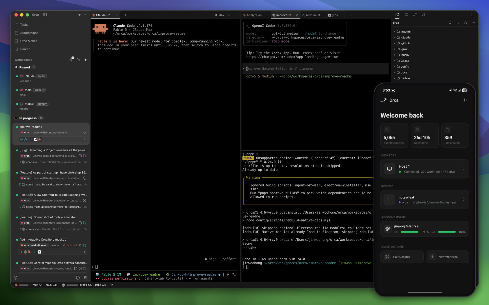

Orca
A desktop app for running a fleet of AI coding agents in parallel - each gets its own copy of the code, and you track them all from one screen.
Open Orca on your desktop, give each coding task its own isolated copy of the code, and run Claude Code, Codex or another agent in each one - then check on all of them from your phone.

How does it work?
You want to run several AI coding agents at once, each on a different task, but they fight over the same files - branch conflicts, overwritten changes, and confusion about who changed what.
You ask one agent to refactor a module while another writes tests, and they overwrite each other's files because they share the same working copy.
You open Orca on your desktop and create a worktree (a separate, isolated copy of the code) for each task.
Create two worktrees from the same branch: one for a refactor, one for tests. Each agent sees its own copy and can't touch the other.
Your code and the tasks you want agents to work on - issues from GitHub or Linear, a prompt, or a file you drag into the agent.
Open a GitHub issue in Orca's built-in panel and start an agent on it. The issue details feed into the prompt.
It runs multiple coding agents in isolated worktrees and gives you one view of all their progress.
- Creates a separate copy of the code (a git worktree) for each task, so agents never overwrite each other's work
- Runs up to five agents side by side in split terminals, with a built-in browser that lets you click a UI element and send its code to the agent
- Shows diffs from each agent, lets you comment on specific lines and send feedback back, and notifies your phone when an agent finishes
The README example: fan one prompt across multiple agents, watch them work in split terminals, compare their diffs, and merge the best result.
Several agents working in parallel without stepping on each other, tracked from one screen and your phone.
- Isolated parallel workEach agent in its own worktree - no branch conflicts, no stashing, no file locks
- One view of everythingDiffs, terminal output, browser previews and progress for every agent in one window, with inline commenting
- A phone app for when you step awayGet notified when agents finish, review their work, and send follow-up prompts from your phone (iOS and Android)
What changes for me?
Without it
- Running two AI coding agents at once means switching branches by hand, stashing changes, and hoping they don't overwrite each other's files.
- Checking on a long-running agent means staying at your desk - there's no way to see its progress or send it a follow-up from your phone.
With it
- Each agent gets its own isolated copy of the code. Run five agents on five tasks in one window, and their changes never collide.
- A phone app notifies you when agents finish and lets you review diffs, approve merges, and send follow-ups from anywhere.
How hard is it to try?
Effort
- Download Orca for your computer (Mac, Windows or Linux) and install it. On Mac you can also run
brew install --cask stablyai/orca/orca. - Open a project, create a worktree for a task (like 'write tests for the login page'), and start an agent in it. Orca's docs cover the first-run setup for Claude Code, Codex and others.
- Create a second worktree with a different task and run another agent. Watch both work side by side in split terminals and compare their diffs.
What it takes on your computer
- Space on disk
- No data found for installer size. Available as DMG (macOS), EXE (Windows) and AppImage (Linux). Mobile companion on iOS App Store and Android APK.
- Memory while it runs
- No data found. Runs as an Electron desktop app with WebGL-rendered terminals. Each agent runs its own process.
- Runs on
- macOS (Apple Silicon and Intel), Windows and Linux. Mobile companion: iOS (App Store) and Android (APK). Remote worktrees over SSH to any Linux server.
Paste this into Claude Code. It runs your safety scan first, then a 10-minute test.
/skillspector https://github.com/stablyai/orca If that scan passes: download Orca from onorca.dev/download, open a project, create two worktrees for two different tasks, and run an agent in each. Compare the diffs side by side. 10 minutes max.
Should I?
Great if you...
- You run AI coding agents daily and want to run several at once on different tasks without branch conflicts - each in its own isolated worktree
- You want to monitor long-running agents from your phone and send follow-ups without staying at your desk
Skip it if...
- You only run one agent at a time - Orca's value is in parallel work, and a single agent runs fine in a regular terminal
- You are cost-conscious about AI subscriptions - running five agents in parallel means five sets of API or subscription costs with no pooling
Instead, you could look at
- EmdashAnother open-source desktop app for parallel coding agents in isolated worktrees, with SSH remote support. Lighter-weight and newer.
Is it safe?
- Security advisories: 0GitHub's advisory list, checked Oct 16
- Searches for CVEs, vulnerabilities, malware and scams13 results read, including the national CVE database: nothing found
- Are the stars earned?94K stars, 599 contributors, 14.6K commits. findarepo: looks organic (100/100)
Watch out for
- Each agent needs its own subscription. Running five agents in parallel means five sets of API or subscription costs. Orca tracks usage per account but does not pool or limit spend.
- No independent security review found. Orca runs shell commands and inherits the permissions of the agents it runs. One directory flags this as worth weighing.
- Y Combinator W22 company. Stably AI is venture-backed, which means the business model may change. The app is free and MIT-licensed today, but the company is hiring and building a cloud product (Orca VM).
- 94K stars in 7 months is fast. findarepo rates the growth organic (100/100), but the pace is unusual. The 14,562-commit count suggests heavy development activity - some of it automated.
Who's using it, and for what?
Orca has 94K stars and is 7 months old. The screenshot shows one user with 5,065 agents spawned and 359 PRs created, but named external adopters are hard to find.
We couldn't find anyone describing real use of it yet. That's normal for a brand-new repo, and it's worth knowing.